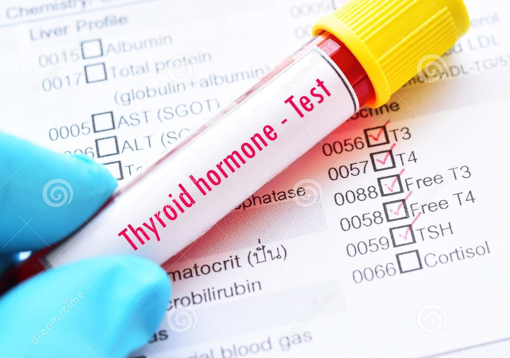

Análisis Clínicos, Endocrinología, Bacteriología, Alta Complejidad
Gerenciamiento de Laboratorios
Especialistas en Calidad Analítica

Análisis Hormonales: Tiroides
Concurrir al laboratorio en ayuno de 8 hs
Si no toma medicación, concurrir solo con ayuno
Si toma medicación, no tomar la mañana que asista, y tomarla luego de la extracción de sangre
Análisis Hormonales: hormonas sexuales y fertilidad
El paciente deberá concurrir al laboratorio con 8 horas de ayuno.
EN PACIENTES QUE TIENEN CICLO MENSTRUAL REGULAR: Para LH, FSH, ESTRADIOL, INHIBINA B y HORMONA ANTIMULLERIANA, entre el 3º y 5º dia del ciclo menstrual, o según indicación médica
Para PROGESTERONA en el día 21 del ciclo menstrual, o según indicación médica
Si está cursando una infección urinaria, o una prostatitis o presenta fiebre, esperar a que estos cuadros se resuelvan.
EN PACIENTES QUE NO TIENEN CICLO MENSTRUAL REGULAR: Las extracciones pueden realizarse en cualquier momento, respetando el horario indicado.